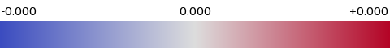

单图 AIGC 可解释结果
P(AIGC) = 1.0000
raw logit +12.1589 · 759921_hybrid_legacy
输入

局部 patch 贡献
平滑贡献热力图

高频残差纹理（wavelet 信号）
六类失真下的置信度轨迹
分支反事实贡献
解释边界
confidence_contribution = P(AIGC|original) - P(AIGC|patch occluded). Positive values raise AIGC confidence. This is a local counterfactual, not causal proof.
热力图按 patch 贡献的 max-abs 归一化，蓝色拉低 / 红色抬高 AIGC 置信度；纹理图为逐像素高频残差（输入信号，非模型输出）。完整数值：explanation.json；逐 patch：patches.jsonl。